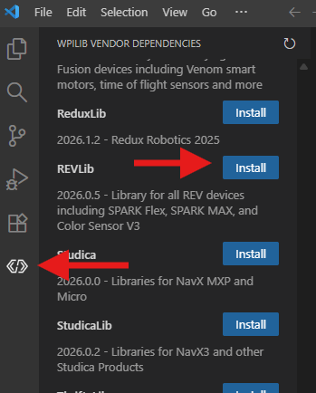
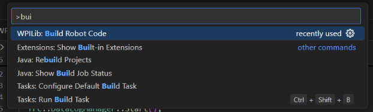
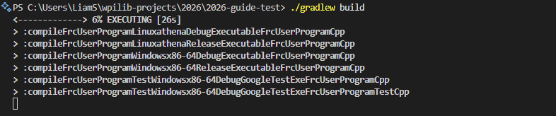
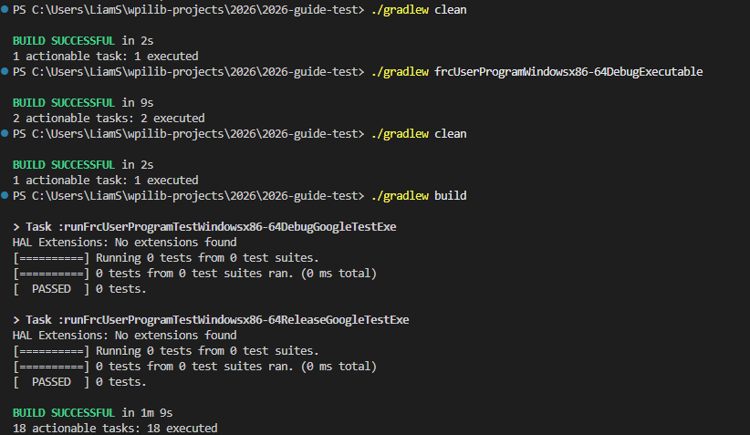

Vendor libraries & building your code
You'll have installed the RevLib vendor library and know how to build your code.
To control hardware like a motor, we usually need code that the hardware's manufacturer provides. This is called a library or dependency. For our first project, we'll install just one: RevLib, from Rev Robotics. It lets us drive their Spark motor controllers, which IC uses a lot.
Install RevLib
- In the VS Code sidebar, open the WPILib Vendor Dependencies tab.
- Hit refresh in the top right corer of the sidebar if you don't see any options.
- Find REVLib in the list and install it with the blue button.

Build your code
After installing the libary, a build is usually automatically started in the terminal at the bottom to check the install worked. Building converts your human-readable code into machine-readable instructions. Wait a minute to see the build complete.
We can also run builds ourselves. To see this in action:
- Open VS Code's command palette with Ctrl + Shift + P.
- Run the WPILib: Build Robot Code command.

- A terminal opens at the bottom of the screen and runs a build process.
- It eventually prints BUILD SUCCESSFUL in green.
- This time should be fast, because it is leaning on the previous build, but this can take several minutes if there are real code changes to build.
If you don't see BUILD SUCCESSFUL, read the red error text — it usually names the file and line with the problem. The most common cause at this stage is the Additional C++ install from Lesson 1 being skipped. Workshop mentors can help if you're stuck.
Faster Builds
During your build, you may have seen several "compileFrcUserProgram..." lines. Each of these indicates a seperate version of the code being built. Below we can see versions for Debug, Release, Test, Windows and Linux.

The build process can be sped up by only building the version you need. There is no VS Code command pallet option to do this, but
you can run the build from the terminal with a command like ./gradlew frcUserProgramWindowsx86-64DebugExecutable. This
will only build the Debug version for Windows, which is what we need to run the simulator and will be much faster.
Run ./gradlew tasks in the terminal to see all options for targeted builds (and much more!).
Here you can see a clean (not relying on previous builds) build of just the windows debug version taking 9 seconds, and the full build taking over a minute.

In the terminal, you can press the up arrow on your keyobard to re-enter the previous command. This is useful for frequently re-running a targeted build command.